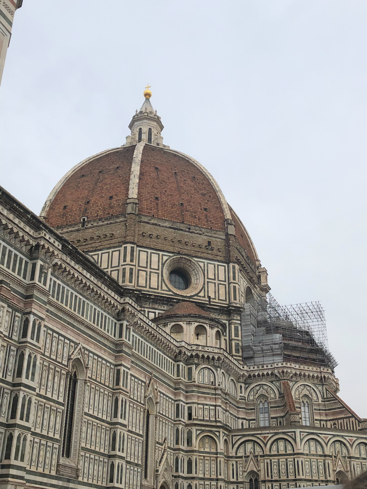
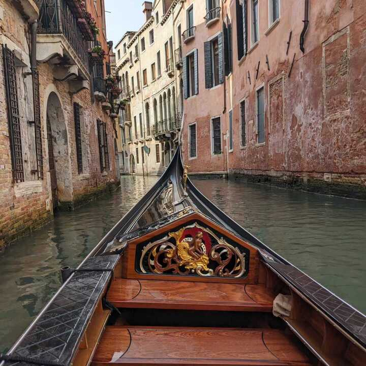

•❅───✧❅✦❅✧───❅•
Entry One
The Name of the dome is "Santa Maria del Fiore" its the most Gothic and famous cathedral in Europe. It was built in 1296 developed by Giotto, pisano and Talenti which accumulating in the large dome in the world; waws created by Filippo Brunelleschi between 1420 and 1436. Plus having Miachel Angolo paint his masterpiece on the inside of the roof of the dome.

•❅───✧❅✦❅✧───❅•
Entry Two
Gaudi Began consruction of the Sagrand Familia in Barcelona in 1882. And since then it has become a heratrige cite and is still in construction, possibly being finished in 2026, the centennial anniversery of Gaudi's death; many flock to pray and bask in its beauty.
•❅───✧❅✦❅✧───❅•
Entry Three
Also known as the Flavian Ampitheater, it was built duing the Favian empire and was a gift from the empire to the Roman people, and it is assumed to have been built betwen C.E. 70 and 72 under the rule of Emperor Vespasian.
•❅───✧❅✦❅✧───❅•
Entry Four
This 18th century fountain was designed by Italian Architecht Nicola Salvi and completed in 1762, the statue is the one of the God Neptune.

•❅───✧❅✦❅✧───❅•
Entry Five
The flowers in Tuscany are one of the more famous, for having endless fields in summer times, used for crops and oil.
•❅───✧❅✦❅✧───❅•
Entry Six
The pantheon is a Catholic church but origanally a Roman Temple, it was commissioned during the Agustus raign by Marcus Agrippa, however the original was burnt down. The one currently operated ordered by the emperor Hadrian was built in c. 126AD.

•❅───✧❅✦❅✧───❅•
Entry Seven
A gondola is a long narrow flat-bottomed boat with a high praw and stern used inthe canals of Venice for tourism.

•❅───✧❅✦❅✧───❅•
Entry Eight
Italy is famous for this icecrea like treat, it comes in an endless amount of flavors and is found all over Italy.

•❅───✧❅✦❅✧───❅•
Entry Nine
This famous lying puppet is made of complete hand carved wood, origanally appearing in a magaine, starting on the 7th of July in 1881.

•❅───✧❅✦❅✧───❅•
Entry Ten
Born in 1475, Michealangelo created masterpieces at the age of 15, creating the statue of david, pantings for the Sistine Chapel ceiling, and Mosedi.

•❅───✧❅✦❅✧───❅•
Entry Eleven
In Italy, pasta is a symbol of union and is a vital part to culture and life. Pasta is a symbol of Italy and always will be.

•❅───✧❅✦❅✧───❅•
Entry Tweleve
In 79 A.D. Pompeii was hit with a devistating volcanic eruption, sending meters of ash onto the city. Now people can see the vast city and can visit those who past.